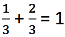
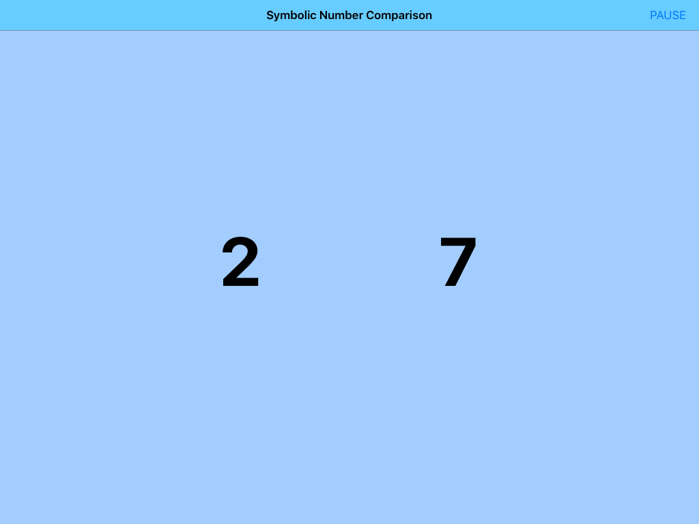
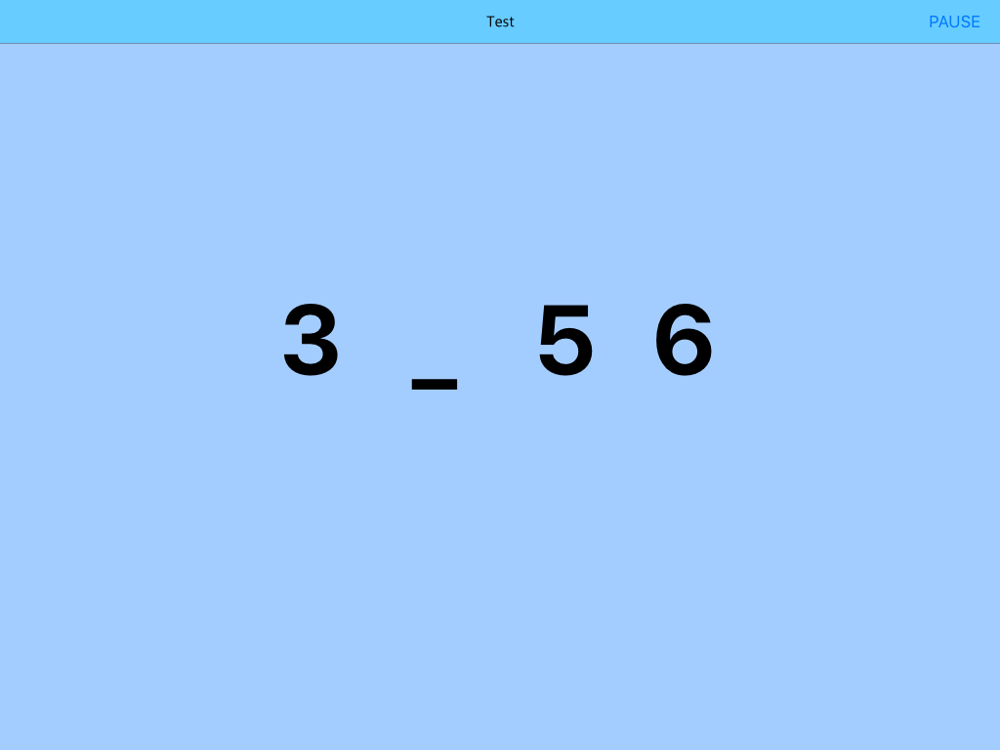
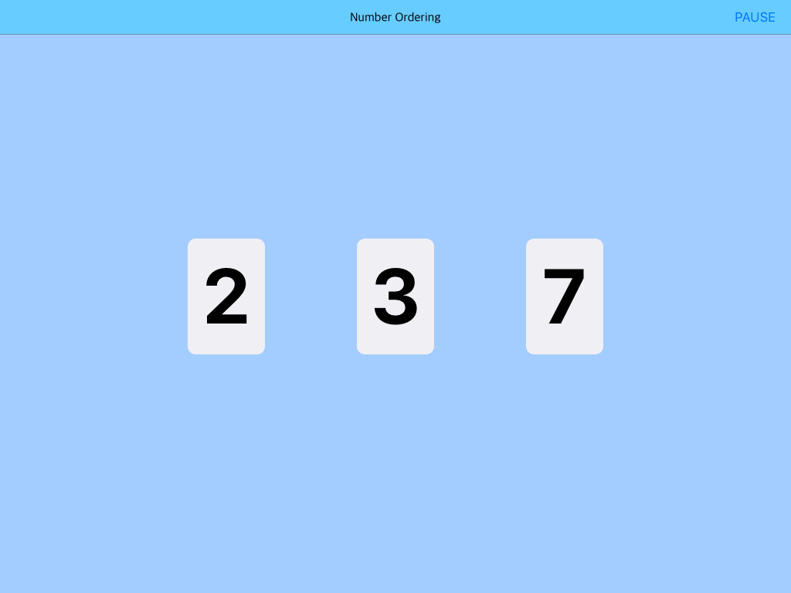
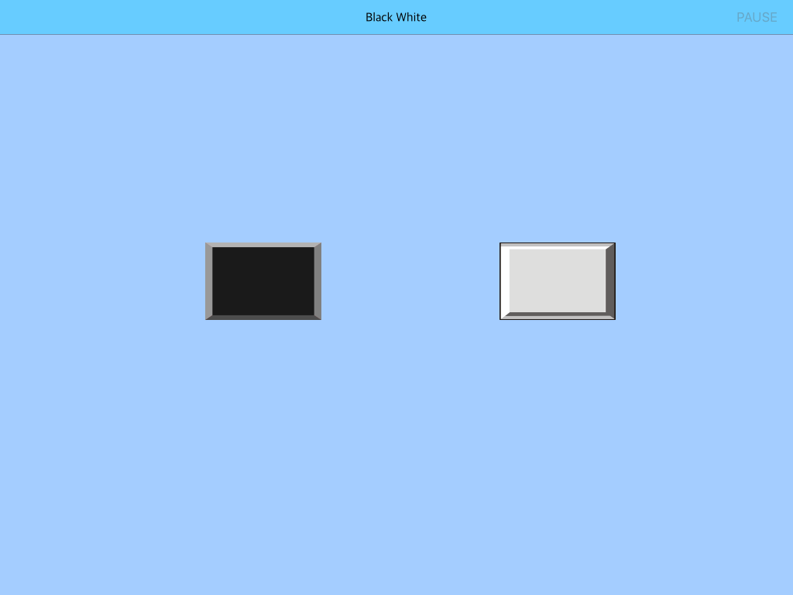
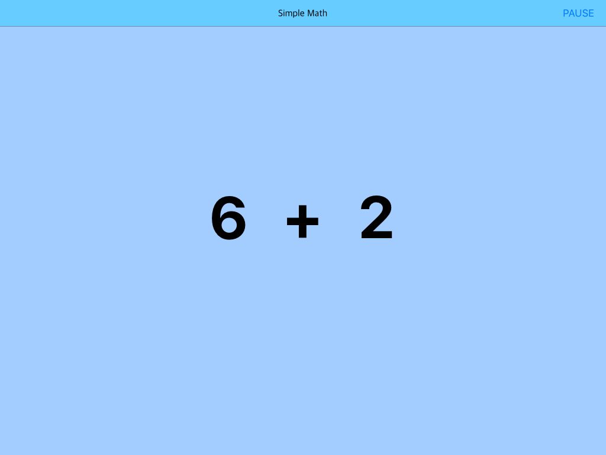

Numerical Integration
Chang Xu and Jo-Anne LeFevreNumber relationships
Numbers are related to each other
Cardinal associations
3 > 2 > 1
Ordinal associations
1
 2
3
2
3
Arithmetic associations
1 + 2 = 3
3 - 2 = 1
1 x 2 x 3 = 6
3 ÷ 2 = 1.5
Complex associations
2x + 1 = 3
More...
Cardinal
 Ordinal
Ordinal
 Arithmetic
Arithmetic
 Complex math...
Complex math...
Cardinal and ordinal
- Cardinal and ordinal processing are dissociated Delazer & Butterworth, 1997; Turconi & Seron, 2002; Lyons & Beilock, 2013
- Cardinal first; follow by Ordinal Colome & Noel, 2012; Vogel et al., 2015
- Grade 1: Cardinal processing predict arithmetic Lyons et al., 2014; Sasanguie & Vos, 2018
- Grade 2: Ordinal processing predict arithmetic
What are the building blocks of ordinal processing ?
Building blocks of ordinal associations
Sequential assoication
. . . 3 4 5 6 7 . . .
Cardinal association3 < 5
6 > 5
3
5
6
What are the building blocks of ordinal processing ?
Sequential and cardinal associations
Present Research
- When do childen integrate sequential and cardinal associations to form ordinal associations ?
- How does it relate to children's development of arithmetic associations
- Longitudinal Study
- 146 Children (Grade 1 and 2)
- T1 (beginning of year)
- T2 (end of year)
Cardinal associations (symbolic number comparison)
Sequential associations (missing number)
Ordinal associations (number ordering)
Inhibitory controls (Black & White)
Arithmetic (addition)
For children in grade 1 and grade 2:
- Step 1: Examing integration status for acquisition of ordinal association
- Step 2: How do basic associations relate to arithmetic associations ?
- Step 3: Which basic associations predict the growth of arithmetic ?
Step 1
Children finish their integration at grade 2
Step 2
Step 3
From grade 1 to grade 2, it shift from cardinal to ordinal
Summary
How do children use ordinal association to solve arithmetic issue?
What is ordinal association ?
Thank you
Special thanks to Heather Douglas, Feng Gu, and Brianna Herdman who contributed to data collection